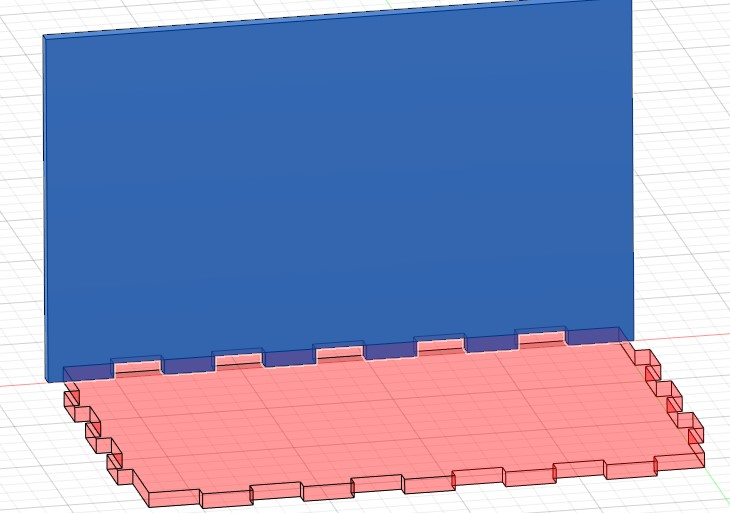

Projects
This page is the documentation of the things I learn throughout the course!
Musical Box
In this project, I will be creating a Musical Box. The design will be done in fusion 360 and it will be made using the laser cutting machine.
Step 1: creating the Box
i will be experimenting with the paremeter funtion in fusion360
Here in the paremeter I specified the thickness, lenght and width of the box, the Tab Length and the tab numbers on both all the sides
Next, 3 sides of the body is created as I can just mirror it later on to get the full box. The tabs of the box are created using the paremeters. To make the tabs for the other sides, the cut function is used

Step 2: Designing the box
This where i will be adding the design for my musical box. I added the feets and hinges for the box cover.
Step 3: mirror the design
The 3 faces will be mirrored to get the whole box.
Step 4: creting the cover and platform for music crank
the design of the cover is made simply by matching the outline of the box and the hinges. The platform is creted by using a mid plane and a surfaces that is half of the box.
Step 5: preparing the model for laser cutting
laser cutting needs vector diagrams, so a sketch is created on each surface and is exported as DXF file.
Step 6: Laser cutting and asembling the model. the box is joined using glue and the musical crank is secured using screws.

copyright © kong qi hao